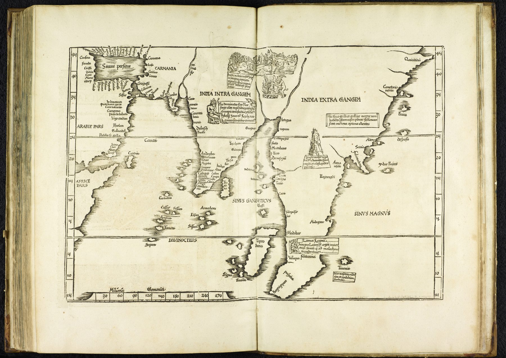

The edition
The sheet belongs to the 1525 Strasbourg edition of Ptolemy’s Geographia, printed by Johann Grüninger with Willibald Pirckheimer’s new translation. The map is Lorenz Fries’s reduced woodcut after Martin Waldseemüller’s Tabula Moderna Indiae of 1513. Its label, Tabula Moderna Indiae, identifies it as one of the supplementary ‘modern’ maps placed beside the ancient Ptolemaic corpus.
Why ‘modern’ mattered
Renaissance editions of Ptolemy commonly separated maps reconstructed from the classical coordinates from newer tables incorporating medieval travel, Portuguese navigation and contemporary compilation. The map therefore belongs to two times at once: it is presented under Ptolemy’s authority, but its purpose is to show what sixteenth-century Europe believed it had learned since antiquity.
A corrected but inherited India
The subcontinent and the regions beyond the Ganges are recognisably reorganised by post-classical information, yet the conceptual frame remains Ptolemaic. India is still understood through large inherited divisions and through an atlas whose intellectual centre is a second-century Alexandrian geographer. New coastlines enter an old book.
The gaze
The word ‘modern’ on the plate is the important one. Fries’s corrected sheet sits a few leaves from Ptolemy’s India, and the reader is invited to compare the two. Sixteenth-century Europe received its new coastlines through exactly this kind of supplement, and the supplement borrowed the ancient book’s prestige.
In the Deccan timeline
The founding of Vijayanagara (c. 1336–1346) · Deva Raya II (r. 1424–1446) · The move to Bidar (c. 1425–1432) · The Bahmani break-up (c. 1490–1518) · Vijayanagara, the city (c. 1500) · Krishnadevaraya (r. 1509–1529) · Domingos Paes describes Vijayanagara (c. 1520–1522)